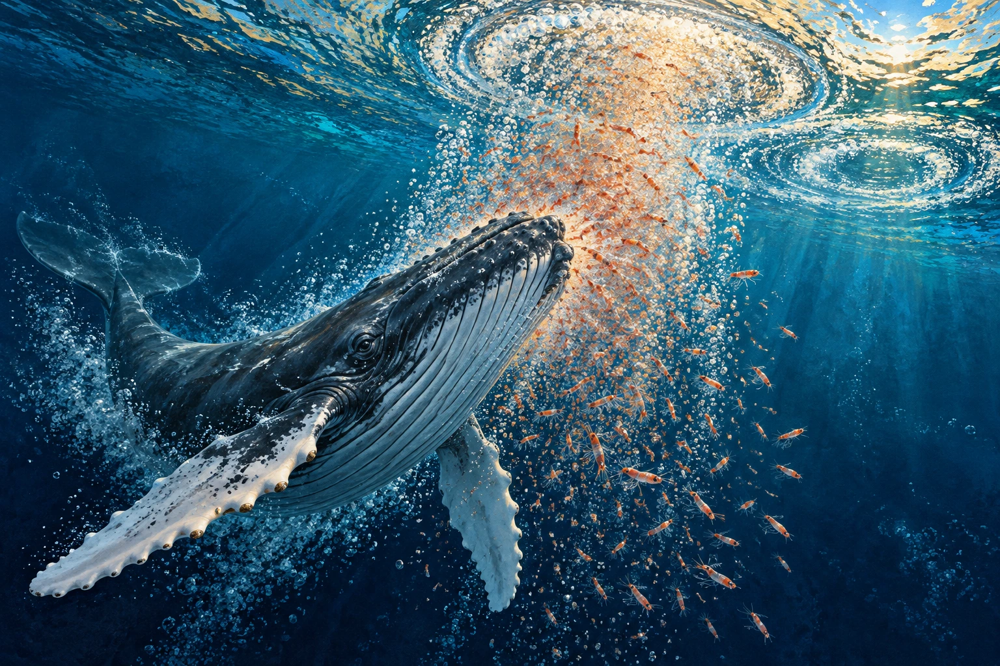

✨ 3D INTERATTIVO SC-05ANIMALI STRAORDINARI
La rete invisibile delle megattere
Come possono delle bolle d’aria diventare una rete?
Simulazione tridimensionale sottomarina: osserva il banco di pesci, cambia prospettiva dall'alto o di lato e attiva la spirale di bolle concentriche creata dalla megattera.